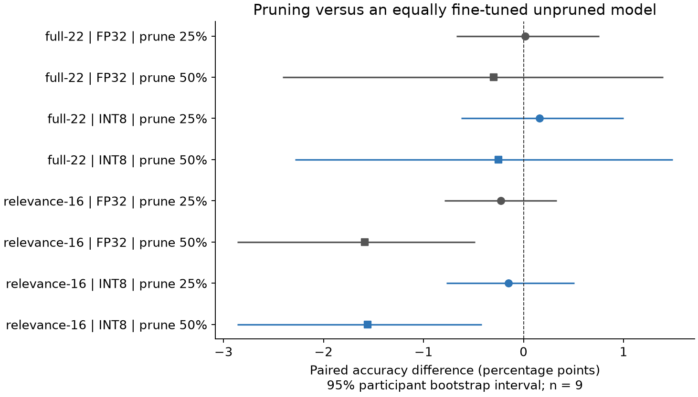

Supplementary M5 reproduction · added after original test results
Both original bases, all 9 participants and 3 seeds; every branch gets 100 extra epochs at 1e-4.

−1.56 points
16-electrode INT8, 50% pruned versus unpruned with the same extra training.
95% exploratory interval: −2.86 to −0.42 points.
216 models evaluated in FP32 and INT8. The historical M4 finalist is retained.
Peiye Li · COMP 690 · supplementary, post-test comparison · M5 independent reproduction, not original-weight recovery